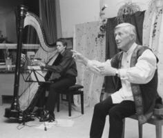

Pressestimmen und Kommentare
"Gebannt lauschen die Zuhörer den spannenden Märchen des Erzählers, der seine Gestik stets eindrucksvoll einsetzt, um dem Gesprochenen die nötige Wirkung zu geben."
(Kreiszeitung Wesermarsch)

"König der Harmonie"
(TAZ Bremen)
"Lidecke hält seine Zuhörer im Bann. Er erzählt spannend, und man vergisst, daß man auf dem Campingplatz ist und nicht in Gedanken in Tibet."
(Nordseezeitung, Bremerhaven)
"Kommen Sie bald wieder. Ich möchte meine Klasse noch einmal so leise und aufmerksam erleben."
(Lehrer einer 6. Klasse)
"Mit angemessenem Gesichtsausdruck, lebendigen Bewegungen und dem schönen Klang einer ausgebildeten Stimme erzählt Lidecke Märchen für Erwachsene."
(Nordwest-Zeitung)